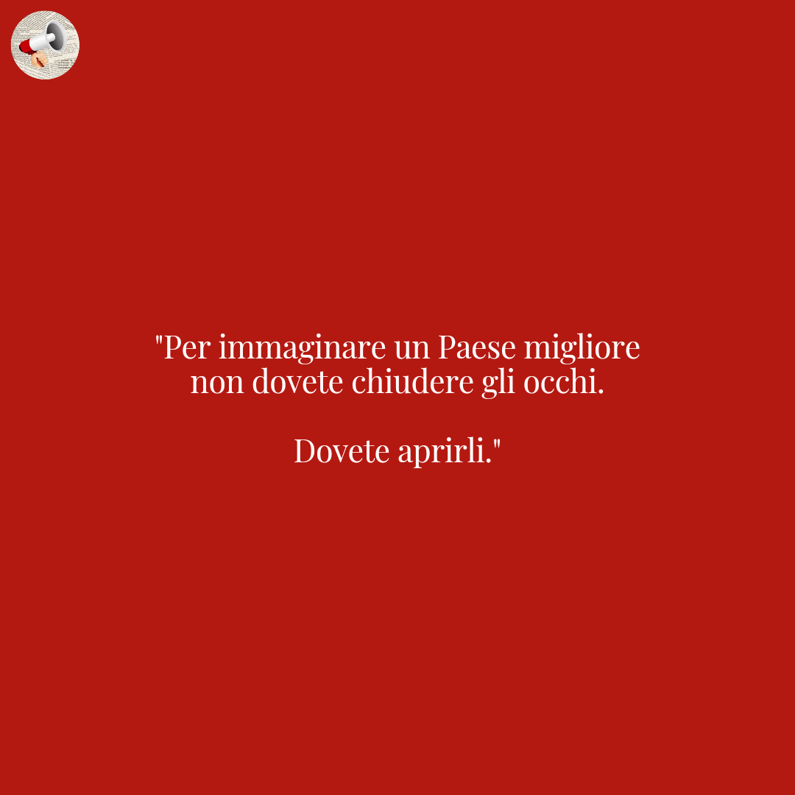

Prendo in prestito le parole usate da @ciwati e non per spammarvi il mio voto ad AVS giuro.
Mancano pochi giorni, il 25 saremo chiamati alle urne per eleggere il nuovo Parlamento e ci tengo a ribadire perché è importante esprimere una preferenza, rivolgendomi soprattutto alla mia generazione. Abbiamo letto tanti numeri, tante statistiche, sulla poca presenza di giovani all'interno dell'elettorato italiano, e sappiamo benissimo quanto sia alta la percentuale di astensionismo che ogni anno rischia di toccare picchi storici - in negativo. Non deve e non può continuare ad essere così. Ci sentiamo poco rappresentatə e non posso di certo negarlo, quei 10 mln circa non ci rendono un pubblico "interessante", soprattutto per una certa parte politica permettetemi di dirlo, ma non è non votando che risolviamo qualcosa, anzi. È importante farci sentire, a prescindere dalla scelta finale, non starò qui a disquisire sul perchè sia giusto o no votare uno più di un altro, ognuno ha i suoi motivi e per fortuna in democrazia è lecito dare spazio a tante idee (antifasciste) diverse. Se non ti occupi di politica comunque la politica si occuperà di te e allora perché lasciare campo libero a chi ancora crede che non abbiamo altra vita fuori dallo schermo di uno smartphone? Abbiamo dimostrato in tante occasioni quanto questa generazione sia attenta alle tematiche importanti e allora perché non esprimerci nel momento più alto della democrazia? Cercare il partito perfetto è inutile, dico sempre che per essere d'accordo al 100% con qualcunə dovrei candidarmi e votare per me stessa, perché per fortuna non c'è il pensiero unico (ah no?).
Votare è un diritto e un dovere.
Coerenti a sé stessə, apriamo gli occhi, e votiamo.